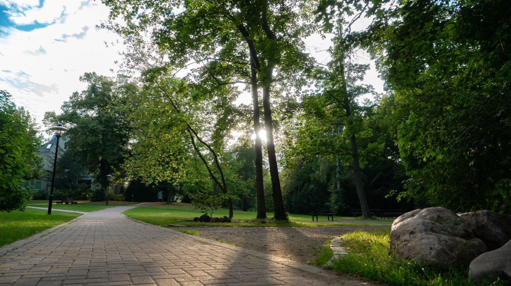
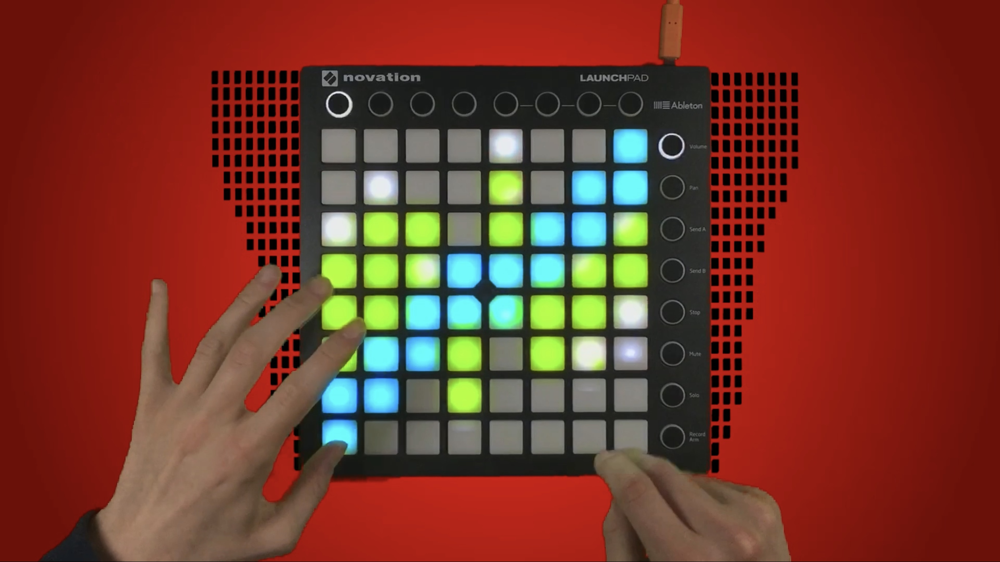

- Zahnarztpraxis Susann Behrens
- Buchholzallee 7, 19370 Parchim
- Student an der HS Harz, Medieninformatik 2.Semester
- Foto-, Video- und Design-interessiert
Zahnarztpraxis Susann Behrens
Unsere Praxis in Parchim
Öffnungszeiten
| Montag | 08:00 - 18:00 |
| Dienstag | 08:00 - 18:00 |
| Mittwoch | 08:00 - 18:00 |
| Donnerstag | 08:00 - 18:00 |
| Freitag | 08:00 - 18:00 |
| Samstag | Auf Bereitschaft |
| Sonntag | Geschlossen |

Unsere Fähigkeiten

Kameramann
@ Studentenfilm "Normalisierung"
Anfang August wirkte ich bei einer Filmproduktion unter Leitung von Hendrik Herbert mit.
Dabei drehten wir ein Drama um ein Mädchen im Kinderheim, die versucht auszubrechen.
Es kamen 4 professionelle Schauspieler zum Einsatz, Ich war Kameramann, Tonmann war ein junger Erwachsener namens Falco, ein BTS Assistenzmann namens Sebastian war auch dabei, und natürlich der Regisseur selbst.

Auto Fotografie
Ich betreibe in meiner Freizeit, neben den studentischen Aktivitäten, ein Fotografie Hobby. Dabei konzentriere ich mich hauptsächlich auf Autos, weil ich sehr auto-interessiert bin.
Als Equipment verwende ich eine Sony Alpha 7s Mk 2 oder eine 7r Mk2, die mir von der Medienleihe der Hochschule Harz zur Verfügung gestellt werden. Meine neuste Errungenschaft ist das Erwerben eines kleinen RGB Lichtes, das ich in der Nacht sehr gut einsetzen kann um außergewöhnliche Lichtsituationen zu erschaffen.

Auto Videografie
Vor 2 Jahren machte ich den ersten Schritt in Richtung Auto Videografie, indem ich mich von JP Performance inspirieren lassen habe und anfing, mein erstes Auto Video zu drehen.
Heute ist dies meine Lieblingsbeschäftigung, ich liebe es auch zu schneiden, immer neue Effekte einzubauen etc. Jedoch fehlt es mir an Reichweite, damit neue Leute mich entdecken und ein Video von ihrem Fahrzeug wollen. Zurzeit steht mir nur mein eigenes Auto als Videoobjekt zur Verfügung, das für mein Publikum langsam langweilig werden könnte.

Natur Fotografie
Wenn ich mal nicht in Wernigerode bin, dann besuche ich meine Eltern in der Heimat. Dabei achte ich drauf, dass ich mir immer eine Kamera von der Medienleihe mitnehme um zu Haus schöne und detailreiche Naturbilder aufzunehmen.
Zur Natur zählen stark-gesättigte Wiesen, Flüsse, Berge, aber auch Katzen im Garten, sowie Gebäudefotografien von z.B. der Hochschule
Personen Fotografie
Das kommt zwar nicht so oft vor, aber wenn denn mal genug Zeit da ist, um mit einer weiteren Person, in diesem Fall die zu fotografierende Person, eine gute Location zu finden,
dann kommen dabei auch qualitativ hochwertige Bilder bei raus. Ein Bild kann dabei sogar bis zu 80 Megabyte groß werden.
Ich habe bereits eine junge Dame namens Carolin, sowie meine Freundin und Gäste einer goldenen Hochzeit fotografiert. Klingt nicht nach viel, hat mir aber trotzdem viel Erfahrung geliefert, die ich gut zu schätzen weiß und sie später anwenden werde.

Musikproduktion & -videografie
Vor 5 Jahren begann ich mit der Musikproduktion, hauptsächlich konzentriert auf Live-Performance. Dabei benutzte ich ein Midi-Instrument "Launchpad". Das hat 64 Knöpfe und kann auf jedem individuell kurze Songclips abspielen.
Davon habe ich Videos gemacht, wie ich die Tasten drücke und wie dabei aufwendige Lichtshows entstehen.
Seit zwei Jahren ist jedoch die Community hinter Launchpad Videos sehr geschrumpft, verschuldet durch die Verschärfung des Copyrights auf Youtube. Ich habe auch die Motivation und die Lust verloren, solch aufwendige Projekte zu starten. Trotzdem war es eine sehr schöne Zeit, in der ich allgemein den ersten Kontakt mit professionellem Videoschnitt hatte.